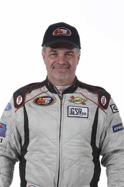

Sources in the garage have pointed to Gregory Rayl as a possible candidate for Kyle Busch's #18 Safelite Toyota Tundra in 2020. Rayl would be replacing Harrison Burton, who, despite not winning any races in 2019, is moving up to the Xfinity series next season for Joe Gibbs Racing. Rayl has spent 2019 driving part time for both Jennifer Jo Cobb and the Reaume Brothers, as well as crew chiefing the Reaume Brothers trucks.